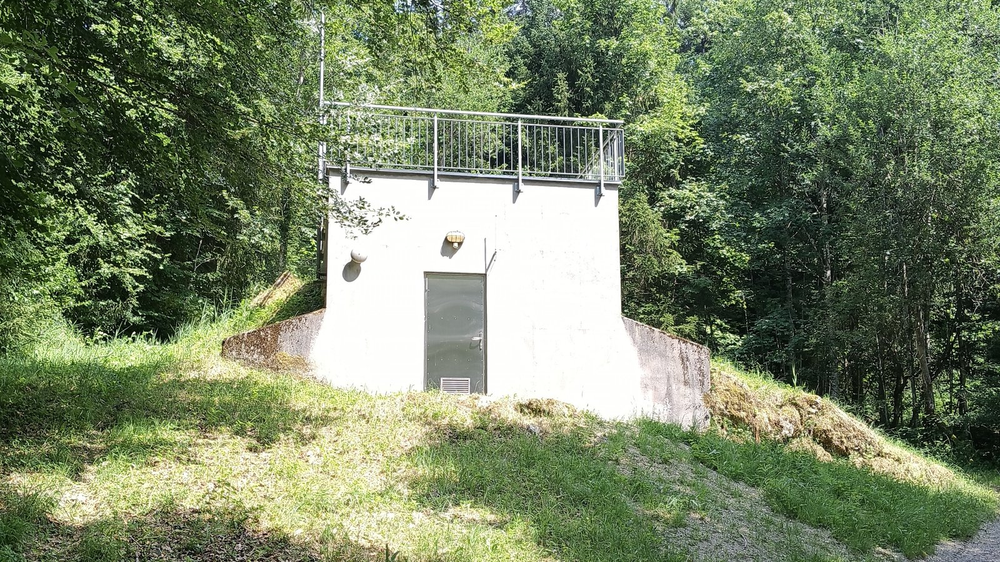

Die Wassergenossenschaft Sulzberg-Thal versorgt den Ortsteil Thal der Gemeinde Sulzberg zuverlässig mit frischem Trinkwasser aus der Region. Das Wasser stammt aus drei Quellen und wird in zwei Hochbehältern zu je 75 m³ gespeichert.
| Gebühr | Betrag |
|---|---|
| Wasserbezug bis 300 m³ | € 1,17 / m³ |
| Wasserbezug nächste 200 m³ | € 0,77 / m³ |
| Wasserbezug darüber | € 0,66 / m³ |
| Grundgebühr (inkl. Zählermiete) | € 11,62 / Monat |
| Anschlussgebühr Einfamilienhaus | € 4.545,83 |
| Anschlussgebühr Doppelhaus | € 6.069,72 |
Wasserbezug und Grundgebühr netto zzgl. 10% MwSt. Anschlussgebühren inkl. 10% USt.
Wasserhärte: 14,7 °dH (hart)
Unser Wasser wird regelmäßig untersucht und entspricht allen gesetzlichen Anforderungen. Die folgenden Werte stammen aus der Probenahme vom 04.05.2026 am Hochbehälter nach der UV-Anlage (Umweltinstitut Vorarlberg).
| Parameter | HB Thal (nach UV) |
|---|---|
| Gesamthärte | 14,7 °dH |
| pH-Wert | 7,6 |
| Leitfähigkeit (25 °C) | 512 µS/cm |
| Calcium | 67 mg/l |
| Magnesium | 23 mg/l |
| Natrium | 6,0 mg/l |
| Nitrat | 4,5 mg/l |
| Chlorid | 3,5 mg/l |
| Sulfat | 3,0 mg/l |
| Eisen | < 2 µg/l |
| Mikrobiologie | unauffällig |
Grenzwert Nitrat lt. Trinkwasserverordnung: 50 mg/l. Unser Wasser liegt weit darunter.
Wassermeister